Expert Hindi Pandit in Bangalore | Vedic Astrology & Muhurat Specialist
About Our Pandit Services in Bangalore
We are experienced Hindi Pandit in Bangalore providing authentic Vedic rituals according to traditional customs. With 25+ years of experience in performing all types of Hindu ceremonies, puja services, and astrology consultations.
🕉️
Vedic Ritual Expert
Authentic rituals according to Vedas and Shastras
⭐
Jyotish & Muhurat Specialist
Expert in astrology and auspicious timing calculations
🔥
Havan & Puja Expert
Specialist in fire rituals and traditional worship
Our Pandit Services in Bangalore
Marriage Ceremonies:
Complete Vedic wedding rituals and procedures by experienced Hindi Pandit
Religious Puja Services:
Authentic Vedic puja ceremonies for all occasions
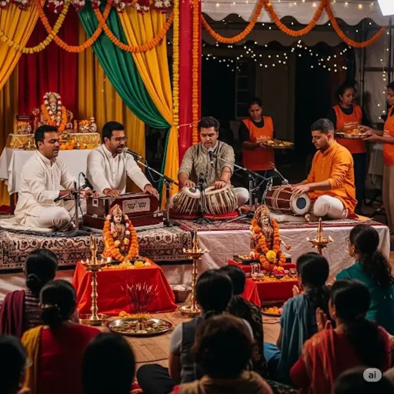
Devotional Programs:
Bhajans, Kirtans and spiritual gatherings
Astrology & Muhurat:
Expert Kundali analysis and auspicious timing calculations
Popular Pandit Services in Bangalore
🕉️
Ganesh Puja
Special worship of Lord Ganesha for new beginnings and obstacle removal. This sacred ceremony invokes the blessings of Lord Ganesha, the remover of obstacles and the god of wisdom.
Removal of obstacles and attainment of success through divine blessings
Duration:2-3 hours
Best Time:Ganesh Chaturthi, Tuesday
Benefits:Success, Wisdom, Peace
🏠
Griha Pravesh Puja
Authentic Vastu puja and house blessing ceremonies for new homes. This sacred ritual purifies the new dwelling and invites positive energies, ensuring prosperity and harmony for the family.
Peace and positive energy at home with proper Vastu corrections and divine blessings
Duration:3-4 hours
Best Time:Thursday, Friday
Benefits:Peace, Prosperity, Harmony
💒
Marriage Ceremonies
Complete Vedic wedding rituals and ceremonies by experienced Hindi Pandit. Our comprehensive marriage services include all traditional ceremonies from engagement to wedding day, ensuring a blessed and prosperous union.
Traditional Hindu marriage with proper muhurat, rituals, and divine blessings for a happy married life
Duration:Full Day
Best Time:Auspicious Muhurat
Benefits:Blessed Union, Prosperity
📖
Satyanarayan Puja
Complete Satyanarayan Katha and puja ceremony for family prosperity. This sacred ritual involves the recitation of the Satyanarayan Katha, which brings peace, prosperity, and removes all obstacles from family life.
Family peace and removal of difficulties through divine blessings and sacred story recitation
Duration:4-5 hours
Best Time:Purnima, Ekadashi
Benefits:Family Peace, Prosperity
⭐
Navagraha Shanti
Planetary peace rituals for astrological harmony and removing planetary doshas. This powerful puja pacifies the nine planets and balances their influences, bringing harmony and success in all aspects of life.
Planetary dosha removal and life balance through Vedic remedies and divine interventions
Duration:3-4 hours
Best Time:Saturday, Amavasya
Benefits:Planetary Harmony, Success
💰
Lakshmi Pujan
Special worship of Goddess Lakshmi for wealth, prosperity and business success. This sacred ceremony invokes the blessings of Goddess Lakshmi, bringing abundance, financial stability, and success in all endeavors.
Wealth-prosperity and business success through divine blessings and sacred worship
Duration:3-4 hours
Best Time:Diwali, Friday
Benefits:Wealth, Prosperity, Success
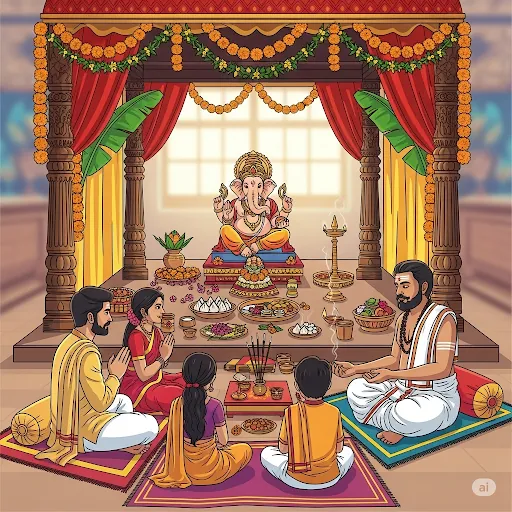
🕉️
Ganesh Chaturthi Puja
Special 10-day Ganesh Chaturthi festival puja and celebrations. This grand festival celebrates the birth of Lord Ganesha with elaborate rituals, daily prayers, and a magnificent visarjan ceremony on the final day.
Complete festival puja with proper rituals, daily ceremonies, and grand visarjan ceremony
Duration:10 Days
Best Time:Bhadrapada Month
Benefits:Festival Joy, Blessings
🎵
Bhajan Sandhya
Evening devotional singing sessions with traditional bhajans and kirtans. Experience the divine atmosphere with soul-stirring devotional songs, spiritual discourses, and collective prayers that create a peaceful and uplifting environment.
Spiritual evening programs with devotional music, prayers, and spiritual discourses
Duration:2-3 hours
Best Time:Evening 6-9 PM
Benefits:Spiritual Peace, Joy
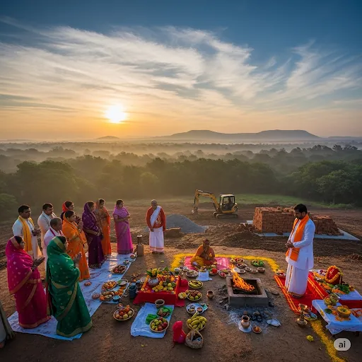
🌍
Bhoomi Puja
Land purification and blessing ceremonies before construction projects. This sacred ritual purifies the land, removes negative energies, and seeks blessings from Mother Earth for successful construction and prosperity.
Sacred land blessing for new construction and development projects with divine protection
Duration:2-3 hours
Best Time:Morning 6-10 AM
Benefits:Land Purification, Success
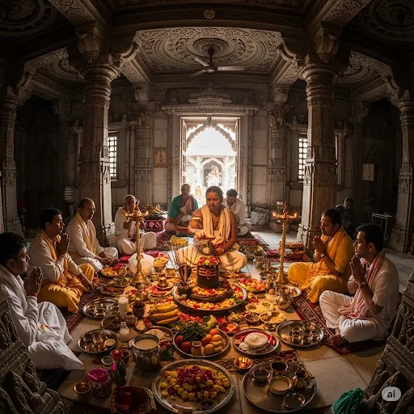
🐍
Kalsarp Nivaran
Special puja to remove Kalsarp dosha and its negative effects. This powerful ritual neutralizes the malefic effects of Kalsarp dosha, bringing relief from life's challenges and restoring peace and prosperity.
Removal of Kalsarp dosha for peace, prosperity, and success in all aspects of life
Duration:4-5 hours
Best Time:Saturday, Amavasya
Benefits:Dosha Removal, Peace
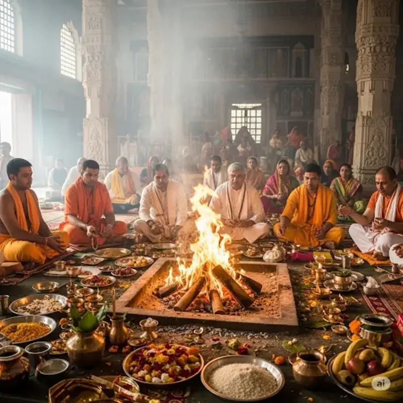
🕯️
Mahamrityunjay Jap
Powerful mantra chanting for health, longevity and overcoming life challenges. The Mahamrityunjay Mantra is one of the most potent mantras that protects from untimely death, promotes health, and brings victory over all difficulties.
Sacred mantra for health, long life, and overcoming all life challenges with divine protection
Duration:3-4 hours
Best Time:Tuesday, Thursday
Benefits:Health, Longevity, Victory
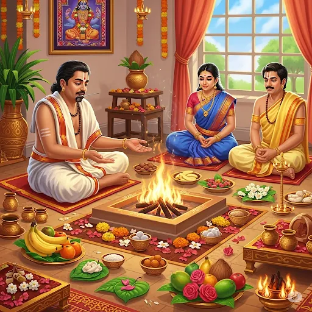
🌳
Mool Shanti Poojan
Ancestral peace ceremonies and family harmony rituals. This sacred ceremony brings peace to departed souls, resolves family conflicts, and creates harmony in the family by seeking blessings from ancestors.
Peace ceremonies for family harmony, ancestral blessings, and resolution of family conflicts
Duration:3-4 hours
Best Time:Amavasya, Pitru Paksha
Benefits:Family Harmony, Peace
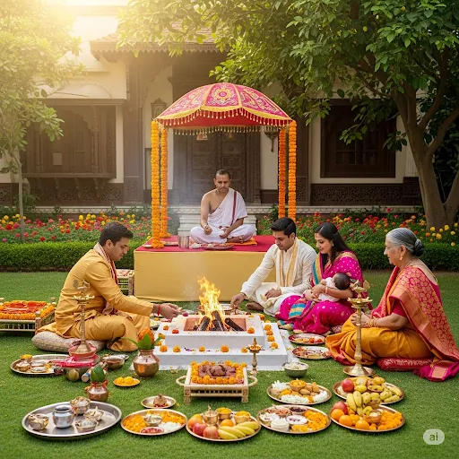
👶
Namkaran Ceremony
Sacred naming ceremony for newborns with Vedic rituals and blessings. This important sanskara marks the beginning of a child's spiritual journey and ensures a blessed and prosperous future through proper naming according to Vedic traditions.
Traditional naming ceremony with proper Vedic rituals and spiritual significance
Duration:2-3 hours
Best Time:11th Day After Birth
Benefits:Blessed Future, Identity
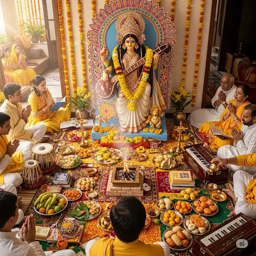
📚
Saraswati Pooja
Worship of Goddess Saraswati for knowledge, wisdom and academic success. This sacred ceremony invokes the blessings of Goddess Saraswati, the deity of knowledge, arts, and wisdom, ensuring success in education and creative pursuits.
Knowledge and wisdom through divine blessings of Saraswati for academic and creative success
Duration:3-4 hours
Best Time:Vasant Panchami, Thursday
Benefits:Knowledge, Wisdom, Success
📖
Satyanarayan Vrat Katha
Complete Satyanarayan Vrat with Katha recitation and puja ceremony. This comprehensive ritual includes fasting, story recitation, and elaborate puja ceremonies that bring divine blessings and fulfill all righteous desires.
Sacred story recitation with complete puja ceremony and fasting rituals
Duration:5-6 hours
Best Time:Purnima, Ekadashi
Benefits:Desire Fulfillment, Peace
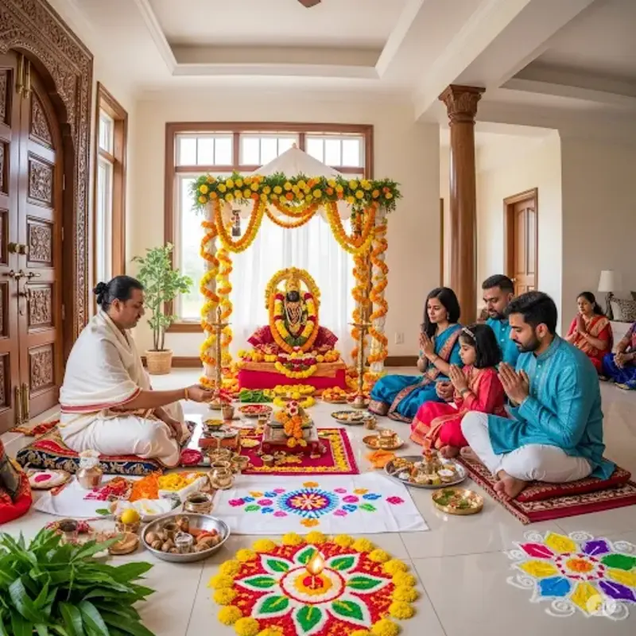
🏗️
Vastu Shanti
Vastu correction and purification ceremonies for homes and offices. This specialized service identifies and corrects Vastu defects, purifies the environment, and creates harmonious energy flow for prosperity and peace.
Vastu correction for positive energy, harmony, and prosperity in living and working spaces
Duration:4-5 hours
Best Time:Thursday, Friday
Benefits:Energy Balance, Prosperity
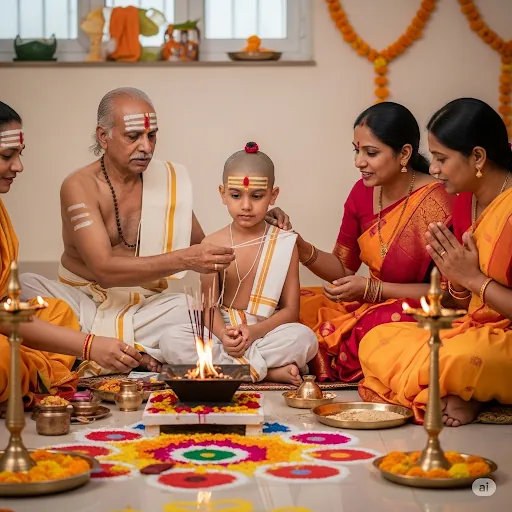
🧵
Yagyopaveet Sanskaar
Sacred thread ceremony (Upanayan) for young boys with Vedic rituals. This important sanskara marks the beginning of formal education and spiritual learning, symbolizing the transition from childhood to student life.
Traditional thread ceremony marking spiritual initiation and educational beginning
Duration:4-5 hours
Best Time:Age 8-12 years
Benefits:Spiritual Growth, Education
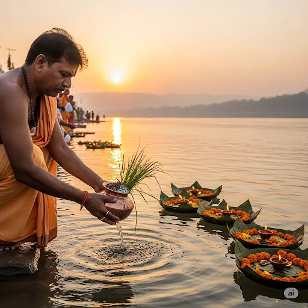
🕊️
Pitra Tarpan Shraddh
Ancestral homage ceremonies and peace offerings to departed souls. This sacred ritual honors our ancestors, provides them peace in the afterlife, and brings blessings and harmony to the family.
Peace ceremonies for departed ancestors, family harmony, and ancestral blessings
Duration:3-4 hours
Best Time:Pitru Paksha, Amavasya
Benefits:Ancestral Peace, Family Harmony
Types of Hindu Rituals We Perform in Bangalore
1. Major Deity Worship & Festivals
These worships are dedicated to specific deities and are often performed during major festivals. Our experienced Hindi Pandit ensures authentic rituals according to Vedic traditions.
2. Yajna & Havan (Fire Rituals)
Sacred fire ceremonies central to Vedic tradition. Our expert Pandit performs authentic havan and yajna rituals for purification and divine blessings.
3. Sixteen Sanskaras (Life-cycle Rituals)
Complete lifecycle ceremonies from birth to death, performed at important milestones. These rituals purify and sanctify different stages of life.
4. Astrological Rituals (Remedial Worship)
Vedic astrology based remedial puja services to pacify planetary influences and enhance positive effects in your life.
Muhurat & Lagn Specialist in Bangalore
Expert determination of auspicious timing (muhurat) and ascendant (lagn) for all important life events according to Vedic astrology principles.
📅
Muhurat Calculation
Precise calculation of auspicious timing for marriage, Griha Pravesh, business opening, and other important events.
⭐
Lagn Analysis
Detailed ascendant analysis and selection of most favorable time periods based on your birth chart.
📊
Panchang Analysis
Comprehensive analysis of tithi, vara, nakshatra, yoga, and karana for determining the most auspicious moments.